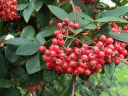

Cotonéaster

Cotonéaster (Cotonéaster de la famille des Rosacées)
Peu toxique.
Partie toxique pour les chats en général et le Korat en particulier :
Surtout les baies.
Symptômes du processus pathologique :
Tuméfaction et brûlures dans la gueule, salivation excessive, vomissements, diarrhées.
Origine de la toxicité (principe actif) :
Amygdaline (hétéroside cyanogénétique).